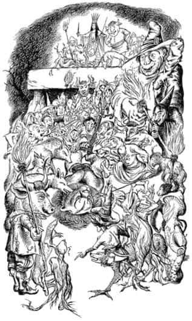

Cadı’nın Başarısı
Cadı gider gitmez Aslan, “Burayı hemen terk etmeliyiz” dedi. “Bizden istenen bu. Geceleyin Beruna Sığlıkları’nda kamp kuracağız.”
Kuşkusuz herkes, Cadı’yla sorunun nasıl çözüldüğünü ölesiye merak ediyordu. Fakat kimse sormaya cesaret edemedi, çünkü Aslan çok öfkeliydi ve herkesin kulakları hâlâ onun kükremesiyle çınlıyordu.
Tepede, açık havada yenilen yemekten sonra (güneş oldukça güçlüydü artık ve otları kurutmuştu) bir süre çadırı sökmek ve eşyaları paketlemekle meşgul oldular. Saat ikiye doğru, gidecekleri yer uzak olmadığı için ağır adımlarla kuzeydoğu yönünde yürümeye başladılar. Yolculuğun başlarında Aslan, Peter’e harekât planlarını açıkladı. “Bu taraflarda işlerini bitirir bitirmez” dedi “Cadı ve yandaşları muhakkak şatolarına geri dönecek ve kuşatma için hazırlanacaklar. Cadı’nın yolunu kesip oraya ulaşmasını engelleyebilirsin ya da bunu başaramayabilirsin.” Sonra iki ayrı savaş planının taslağını çizdi – birincisi Cadı ve yandaşlarıyla ormanda savaşmak, ikincisi ise onun şatosuna saldırmak için. Aslan, Peter’e harekâtı nasıl yürütmesi gerektiği hakkında sürekli öğütler veriyor, “Sentorlarını şuralara koymalısın” ya da “Cadı’nın şunu şunu yapmasını engellemek için gözcüler dikmelisin” gibi şeyler söylüyordu ki Peter sonunda:
“Ama sen de orada olmalısın Aslan” dedi.
“Bunun için sana söz veremem” diye cevapladı Aslan. Ve Peter’e talimat vermeyi sürdürdü.
Yolculuğun geri kalan kısmında Aslan’la en çok Susan ve Lucy görüşmüşlerdi. Aslan çok fazla konuşmamıştı ve onlara üzgün gibi görünmüştü.
Vadinin genişlediği ve nehrin sığ olduğu bir yere geldiklerinde vakit ikindiydi. Burası Beruna Sığlıkları’ydı. Aslan suyun bu yakasında kamp kurulması için emir verdi. Aynı anda Peter, “Öteki yakada kamp yapsak daha iyi olmaz mı? Çünkü Cadı gece saldırısı deneyebilir” dedi.
Kafasında başka bir düşünce varmış gibi dalgın görünen Aslan, görkemli yelesini sallayarak kalktı ve “Ne? Ne dedin?” diye kükredi.
Peter yineledi.
“Hayır” dedi Aslan durgun bir sesle, sanki umursamaz gibi. “Hayır. Bu gece saldırmayacak. Ve sonra derin derin içini çekti. Ama az sonra ekledi: “Neyse, çok iyi bir fikirdi. Bir askerin böyle düşünmesi gerekir. Fakat gerçekten fark etmez.” Sonra kamplarını kurmaya başladılar.
Aslan’ın hali o akşam herkesi etkiledi. Savaşta yalnız kalma fikri Peter’i rahatsız etmişti. Aslan’ın orada olmayabileceği bilgisi onda büyük bir şok etkisi yapmıştı. Akşam yemeği sakin geçti. Herkes bir önceki gecenin ve hatta bu sabahın ne kadar farklı olduğunu hissediyordu. Kısa bir süre önce başlayan mutlu günler sanki şimdiden sona ermekteydi.
Bu duygu, Susan’ı o kadar çok etkiledi ki yatağa girdiği halde uyuyamadı. Bazen koyunları sayarak bazen de oraya buraya dönerek uzunca bir süre yattı. Sonra Lucy’nin karanlıkta yanı başında uzun uzun iç çektiğini duydu.
“Sen de uyuyamıyor musun?” dedi Susan.
“Hayır” dedi Lucy. “Senin uyuduğunu sanmıştım. Susan bence–”
“Ne?”
“İçimde korkunç bir his var – sanki başımızın üzerinde bir şeyler dolanıyor.”
“Öyle mi? Gerçeği söylemek gerekirse bunu ben de hissediyorum.”
“Aslan hakkında” dedi Lucy. “Ya başına kötü bir şey gelecek ya da o çok kötü bir şey yapacak.”
“Bütün öğleden sonra kederliydi” dedi Susan. “Lucy! Savaşta bizimle beraber olmayacağı konusunda ne demişti? Bu gece gizlice gidip bizi yalnız bırakacağını düşünmüyorsun değil mi?”
“Şimdi nerede?” dedi Lucy. “Burada, çadırda mı?”
“Sanmıyorum.”
“Susan! Dışarıya çıkıp etrafa bir bakalım. Belki onu görürüz.”
“Tamam. Haydi” dedi Susan, “burada uyuyamadan yatmaktan daha iyi.”
İki kız, derin uykudaki diğerleri arasından sessizce, el yordamıyla yollarını bulup çadırdan dışarıya çıktılar. Ay ışığı parlıyordu ve nehrin taşlarda çıkardığı şakırtı dışında her şey oldukça sessizdi. Sonra Susan aniden Lucy’nin koluna yapıştı ve “Bak” dedi. Kamp yerinin öte yakasında, ormanın başladığı yerde, Aslan’ın ağır ağır ormanın derinliklerine doğru uzaklaştığını gördüler. Hiçbir söz etmeden ikisi de onu takip ettiler.
Aslan onları nehir yatağının dışına, dik yokuştan yukarıya ve sonra da hafifçe sağa yöneltti – doğrusu, o gün öğleden sonra Taş Masa’nın bulunduğu tepeden buraya gelirken izledikleri aynı yoldu bu. Yeniden karanlık gölgelerden soluk ay ışığına çıkarak, ayaklarını yoğun çiyde ıslatarak takibe devam ettiler. Bu, tanıdıkları Aslan’dan daha değişik görünüyordu. Kuyruğu ve başı eğikti ve sanki çok yorgunmuş gibi, ağır ağır yürüyordu. Sonra saklanacak gölgeliklerin bulunmadığı geniş ve açıklık bir alanı geçerlerken Aslan durdu ve çevresine bakındı. Kaçmak bir işe yaramayacaktı, onun için Aslan’a doğru yürüdüler. Yanına vardıklarında,
“Çocuklar, çocuklar, niçin beni takip ediyorsunuz?” dedi Aslan.
“Uyuyamadık” dedi Lucy – daha fazla bir şey söylemeye gerek yoktu. Aslan’ın ne düşündüklerini bildiğine emindi.
“Lütfen, biz de seninle gelebilir miyiz – gittiğin yere?” diye sordu Susan.
“Şey—” dedi Aslan. Bir an düşündü ve sonra “Bu gece yol arkadaşlarım olması hoşuma gider. Evet, eğer dediğim yere kadar gelmeye ve ondan sonra da yola tek başıma devam etmem için geri dönmeye söz verirseniz gelebilirsiniz.”
“Oh, teşekkürler, teşekkürler. Söz veriyoruz” dedi ikisi de.
Yeniden yola koyuldular. Kızlardan biri Aslan’ın sağında, diğeri solunda yürüyordu. Aslan ne kadar da yavaş yürüyordu! İri, soylu başı öylesine eğikti ki burnu neredeyse otlara değiyordu. Biraz sonra tökezledi ve hafifçe inledi.
“Aslan! Sevgili Aslan!” dedi Lucy, “Derdin nedir? Bize söyleyebilir misin?”
“Hasta mısın, sevgili Aslan?” diye sordu Susan.
“Hayır” dedi Aslan, “Üzgünüm ve yalnızım. Ellerinizle yelemi tutun ki sizin yanımda olduğunuzu hissedebileyim ve böylece yürüyelim.”
Kızlar, onun izni olmadan asla cesaret edemeyecekleri, fakat onu ilk gördüklerinden beri de yapmak istedikleri şeyi yaptılar – soğuk ellerini o tüy denizine gömdüler ve okşayarak onunla birlikte yürümeye başladılar. Biraz sonra Taş Masa’nın bulunduğu tepeye tırmandıklarını anladılar. Tepeye ağaçların daha yükseklerde olduğu diğer taraftan tırmandılar. Son ağaca geldiklerinde (etrafında çalılıklar olan bir ağaçtı) Aslan durdu:
“Çocuklar, çocuklar. Burada durmanız gerekiyor. Ve ne olursa olsun görülmemeye çalışın. Hoşça kalın” dedi.
İki kız da acı acı ağlamaya başladılar (nedenini bilmedikleri halde). Aslan’a yapıştılar, yelesini, burnunu, pençelerini ve iri, üzgün gözlerini öptüler. Sonra Aslan döndü ve tepeye doğru yürüdü. Lucy ve Susan çalılıklarda çömelerek ardından seyrettiler, gördükleri şuydu:
Taş Masa’nın etrafında büyük bir kalabalık vardı. Ayın parıltısına karşın birçoğu, şeytani kırmızı alevler ve siyah dumanlarla yanan meşaleler taşıyorlardı. Ama ne yaratıklar! Kocaman dişli insan yiyen canavarlar, kurtlar, boğa başlı adamlar, şeytani ağaçların ve zehirli bitkilerin ruhları ve tanımlamayacağım diğer yaratıklar. Çünkü tanımlarsam yetişkinler bu kitabı okumanıza muhtemelen izin vermezler – zalimler, büyücü kocakarılar, karabasanlar, dehşet saçan yaratıklar ve ifritler. Gerçekten, Cadı’nın yandaşı olan ve onun emriyle kurdun topladığı herkes oradaydı. Tam ortada, masanın yanında Cadı ayakta duruyordu.
Büyük Aslan’ın kendilerine doğru yürüdüğünü görünce, yaratıklardan bir uluma ve korku verici anlaşılmaz sözler yükseldi. Bir an için Cadı bile korkudan titriyormuş gibi göründü. Sonra kendini topladı ve vahşice kahkaha attı.
“Aptal!” diye bağırdı. “Aptal geldi. Hemen bağlayın onu.”
Lucy ve Susan, Aslan’ın kükreyerek düşmanlarının üzerine atlamasını nefeslerini tutarak beklediler. Fakat bu asla olmadı. Yapacakları işten ürken ve başlangıçta çekinerek yan gözle bakan dört büyücü kocakarı gülerek Aslan’a yaklaştı. “Bağlayın onu, dedim!” diye tekrarladı Cadı. Kocakarılar ileri atıldılar ve Aslan’ın hiç direnmediğini görünce zafer çığlıkları attılar. Sonra diğerleri – şeytani cüceler ve maymunlar – onlara yardım etmek üzere atıldılar ve Aslan’ı aralarına alıp sırtüstü yere yatırdılar. Sanki yiğitlik yapmış gibi bağırarak ve neşeyle alkış tutarak dört pençesini de bir araya bağladılar. Eğer Aslan isteseydi o pençelerden biri bile hepsinin ölümü olurdu. Fakat o, düşmanları ipleri çekip gererken ve sıkı bir şekilde bağlarken etleri kesildiği halde hiç ses çıkarmadı. Sonra onu Taş Masa’ya doğru sürüklemeye başladılar.
“Durun!” dedi Cadı. “Önce tıraş edilmesi gerek.”
İnsan yiyen bir dev, bir makasla öne çıkıp Aslan’ın başının yanına çömeldiğinde Cadı’nın yandaşlarından zalim bir gülme sesi yükseldi. Makas şıkırdamaya ve kıvırcık altın salkımlar yere düşmeye başladı. Sonra dev geriye çekildi ve gizlendikleri yerden seyreden çocuklar yelesi olmayan Aslan’ın yüzünün küçük ve farklı olduğunu gördüler. Farkı düşmanlar da görmüşlerdi.
“Hey, bu sadece büyük bir kedi!” diye bağırdı biri.
“Korktuğumuz şey bu muymuş?” dedi bir diğeri.
Ve Aslan’ın etrafına toplanarak onunla alay etmeye başladılar, “Pisi pisi”, “Bugün kaç tane fare yakaladın kedi?” ya da “Bir kâse süt ister misin pisicik?” gibi şeyler söylüyorlardı.
“Ah, bunu nasıl yapabilirler ona?” dedi Lucy gözyaşları yanaklarından aşağı süzülürken. “Vahşiler, vahşiler!” İlk şoku atlattıkları için Aslan’ın kırpılmış yüzü şimdi Lucy’ye eskisinden daha yakışıklı, daha güzel ve daha metanetli görünüyordu.
“Ağzını bağlayın!” dedi Cadı. Ağzını bağlamaya çalıştıkları şu anda bile, onun bir ısırışı iki üç kişiyi ellerinden ederdi. Fakat Aslan hiç kıpırdamadı. Bu durum çapulcuları öfkelendiriyor gibi görünüyordu. Herkes onun üzerindeydi şimdi. Bağlandıktan sonra bile onun yanına gelmeye korkanlar cesaretlerini toplamaya başlamışlardı. Bir süre kızlar onu göremediler – çevresi ona vuran, tüküren, tekmeleyen ve alay eden yaratıklar kalabalığı tarafından sarılmıştı.
Sonunda çapulcular sakinleşti. Bazıları iterek bazıları da çekerek ağzı ve ayakları bağlı Aslan’ı Taş Masa’ya doğru sürüklemeye başladılar. Aslan o kadar büyüktü ki masaya ulaştıklarında onu masanın üzerine çıkarmak için büyük çaba harcadılar. Sonra iplerini sıkıp yeniden bağladılar.

“Korkaklar! Korkaklar!” diye hıçkırdı Susan. “Ondan hâlâ mı korkuyorlar? Şu halinde bile?”
Aslan masanın üzerinde yeniden bağlandığında (öyle bağlanmıştı ki sanki bir iplik yumağıydı) kalabalığa bir sessizlik çöktü. Dört meşale taşıyan dört büyücü kocakarı masanın dört köşesinde duruyordu. Cadı, önceki gece Edmund’la birlikteyken olduğu gibi, mantosunu çıkardı, çıplak kolları göründü. Sonra bıçağını bileylemeye başladı. Bir an meşalenin ışığı üzerine düştüğünde, bıçak, çelikten değil de taştan yapılmış gibi görünmüştü çocuklara. Tuhaf ve şeytani bir şekli vardı.
Sonunda Cadı yaklaştı. Aslan’ın başının hizasında durdu. Cadı’nın yüzü ihtirasla titriyor, seğiriyordu. Aslan gökyüzüne bakıyordu, hâlâ sakindi; yüzünde ne öfke ne de korku vardı, yalnızca biraz üzgün görünüyordu. Cadı son hamleyi yapmadan önce çömeldi ve titrek bir sesle:
“Şimdi kim kazandı? Aptal, bütün bunlarla hain insanı kurtaracağını mı sandın? Şimdi onun yerine seni öldüreceğim ve böylece Güçlü Büyü tatmin edilmiş olacak. Peki, sen ölünce, onu da öldürmeme kim engel olacak? Onu benim elimden kim alacak o zaman? Narnia’yı sonsuza kadar bana verdiğini, kendi yaşamını feda ettiğini ve onun hayatını da kurtaramadığını anlamalısın. Bunu bilerek, kederle öl.”
Çocuklar gerçek ölüm anını görmediler. Bakmaya dayanamayıp gözlerini kapatmışlardı.